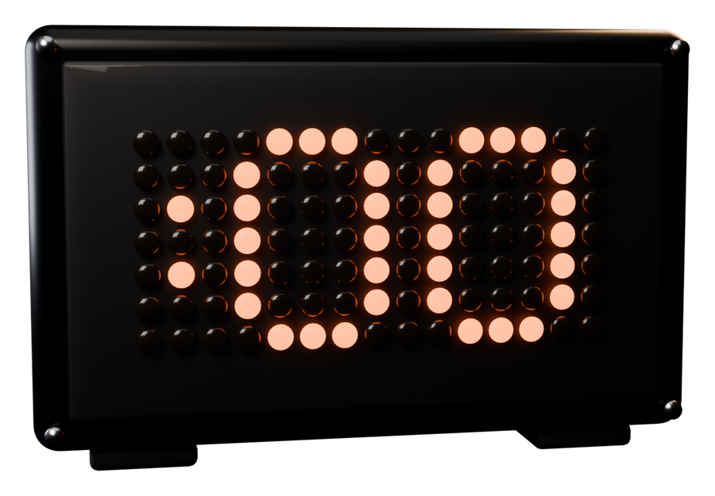

The launchpad that launches exactly one coin an hour. Voted by the crowd, signed in advance by its creator, guaranteed to launch at :00. No copies, no vamps.
One vote per person each hour, no wallet needed. Vote again to move it. The most votes at :00 launches; the rest stay in for up to three hours.
Name, ticker, picture. Your wallet signs your coin's pump.fun launch now, against a durable nonce: a small account your wallet owns that keeps a signed transaction valid until it's used. Copies of anything launched in the last hour, or already in the running, are refused.
Anyone votes, free and with no wallet: your browser keeps a key that signs your vote. One vote per person and per connection each hour.
At the top of the hour, Hourpad broadcasts the winner's own signed launch. The coin goes live on pump.fun with its creator as the dev, even if they're asleep. If it can't land, the next in line launches.
Every hour's coin goes on the board with its votes and its live market cap. The rest stay in the running for up to three hours, and their votes start again each hour.
What it costs. The nonce account holds about 0.0015 SOL of rent; it's yours and comes back when you close it. Pump.fun's normal launch cost is paid only if your coin wins, from your wallet at :00, with your optional first buy. Hourpad takes nothing.
Why a nonce. A normal Solana transaction expires after about a minute. A durable nonce replaces that expiry with a value stored on-chain that only changes when the transaction is used, so your signed launch can wait for :00. Nobody else can change it, and nobody can alter the launch: any change breaks your signature.
Changed your mind? Advance or close your nonce account from your wallet, and your signed launch can never land.
Hourpad is independent and not affiliated with pump.fun. Memecoins are extremely risky. Nothing here is financial advice.